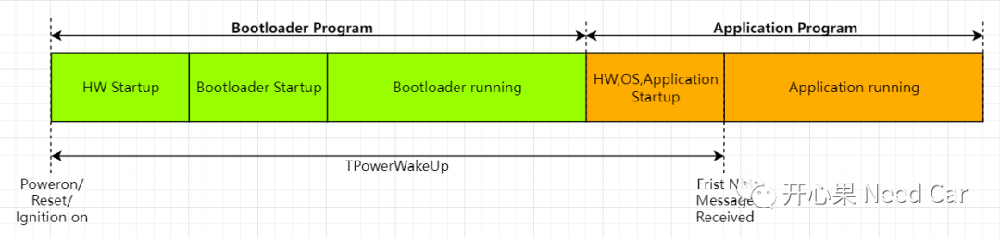
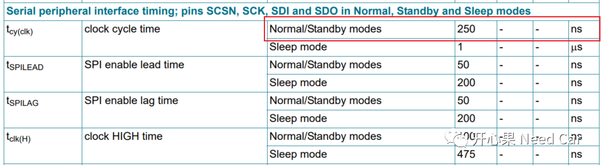
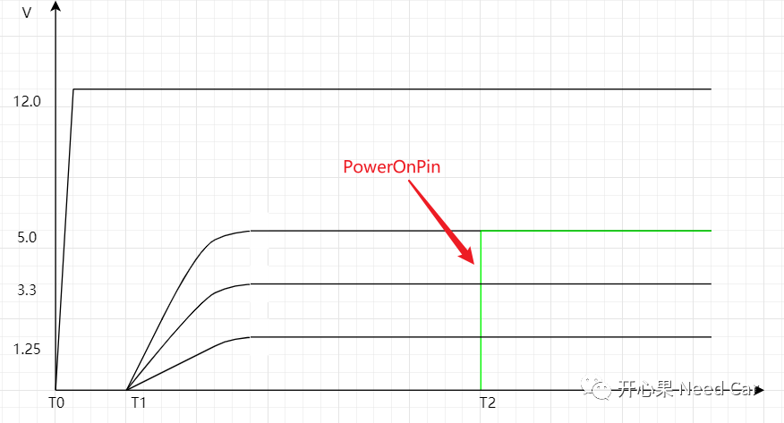

网络管理测试中会测试第一帧网络管理报文的外发时间，即网络的启动时间。一般需求会明确外发第一帧网络管理报文的阈值时间（TPowerWakeUp），比如：150ms，容差10%，即最大165ms。
我们先明确这150ms要耗费在哪里，ECU从被供电到程序稳定运行会经过硬件启动->Boot启动->Boot运行->App启动->App运行这几个阶段，如下所示：

HW Startup:此阶段完全由硬件特性决定，软件层面没有优化余地。此阶段包括VCC供电（比如：KL15上电），之后ECU对应的5V、3.3V及1.25V电源管理模块上电。5V一般给IO使用，3.3V一般给Flash使用，1.25V一般给CPU内核使用。
Bootloader Startup：此阶段一般是Bootloader使用外设资源的初始化，比如IO、System Timer、CAN等模块的初始化。
HW,OS,Application Startup：此阶段包含应用所需外设资源的初始化，OS的初始化以及各软件模块初始化。
提示：如果Boot程序是security boot，可能耗费的时间更长，当然需求也会明确security boot的启动时间。
- 关闭网络仿真（上位机不模拟网络管理报文发送），关闭供电电源；
- 开启供电电源（一般指KL15上电），触发DUT在该网段上通信（硬线唤醒或者网络唤醒）。当KL15电压达到6V时作为起始时间，MCU通常为5V供电，将此刻记为T1；
等待DUT在该网段发送第一帧报文，将此刻记为T2；
检查是否(T2-T1) < TPowerWakeUp。
在这里分享一个工程Bug实例：测试 TPowerWakeUp时，在没有security boot情况下，TPowerWakeUp高达200ms，远大于150ms。实际测试TPowerWakeUp＜165ms即可，要考虑10%偏差。
CAN模块对应的收发器使用的是NXP TJA1145，该收发器需要通过SPI控制其模式切换。问题出现前使用的波特率是100Kbps，通过提高通信速率，优化了＞30ms时间。NXP TJA1145速率提升到4Mbps，查阅其用户手册可以看出，NXP TJA1145在Normal/Standby模式下，其时钟周期可以配置为4Mbps(1/250ns = 4000000Hz)。如果考虑Sleep Mode，至少也可以配置1Mbps，这样也能提升10倍通信速率。

一般来说，ECU从被供电那一刻，即VCC（12V）供电，VCC会瞬间拉到稳定，几乎不耗费时间。而5V、3.3V、1.25V一般在同一时间点，电压开始爬升，耗费的时间相差不大，一般会在几个ms量级，即T1时刻，比如3ms左右。这几个电压耗费的时间是物理特性，没有优化余地。但是PowerOnPin这个电压值可能由配置决定，通过修改外围供电芯片可修改该Pin的供电时间。我在项目实际中确实碰到了这样的设计，通过配置外围芯片配置，PowerOnPin的供电时间由十几ms降低到3ms左右，又优化了近10ms的启动时间，即优化T2时间。

综上所述，带来的思考点有：
使用了SPI的外围器件，先确定其最大支持的通信速率，横向对比，使用UART的地方是否也可以提高通信速率；
特定器件的配置是否设计时间配置。
最后说一下，这些时间是如何测量的，本文在目标代码位置反转IO电平状态，使用示波器测量，这样即可知道代码，函数耗费时间情况，进而针对性的优化。
留言板